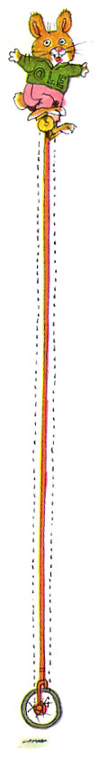
Richard Scarry
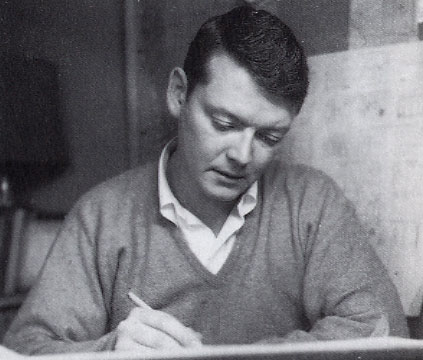"I'm
not interested in creating a book that is read once and then placed on
the shelf and forgotten. I am very happy when people have worn out my
books, or that they're held together by Scotch tape."
Richard McClure Scarry (1919 - 1994) revealed to children the
secrets of everyday life. His worlds were easily understood, populated
by polite, well-mannered animals with a keen eye
for absurd human behavior. Scarry himself bumbled his way through a charmed
life of good luck and fortunate circumstance, pretty much doing whatever
he liked until the day he died.
First editions of his 19-cent books presently fetch hundreds of dollars.
He wrote and illustrated over three hundred major picture books for children,
each one dense with slapstick and visual humor. More than three hundred
million copies of his work have exchanged hands, some of which were translated
into thirty languages. This qualifies him to be the most popular children's
book author of all time, and it can be argued there are two types of people:
those who grew up reading Richard Scarry, and those who remain perpetually
maladjusted to society.
R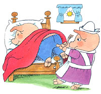ichard
Scarry hated school, and he never paid attention in class. He'd find slithering
garter snakes in the grassy courtyard and set them wriggling on smooth
tabletops at the library. He delighted in the terrified screams of little
girls. The head librarian screamed once or twice too often, and finally
she banished him from the library forever. That was the beginning of the
end for Richard, and his on again / off again love affair with traditional
education. A fitting irony, it can be acknowledged, that years later the
children's section of the Boston Public Library would be permanently stacked
full of his work, and extremely popular with troublemakers of equal or
greater attention deficit disorder.
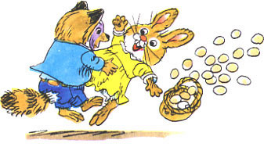The
young master Dick received D's and F's on homework assignments with such
regularity that his poor performance nearly caused him to drop out of
junior high. When he finally reached the upper grades, he often skipped
school to attend burlesque shows in downtown Boston's Scollay Square.
Scarry discovered the mysteries of sex at a very early age. Perhaps too
early. To him, any girl who took off her clothes while slinking about
the stage was worthy of intense scrutiny. More so than Algebra, anyway,
which he was forced to repeat twice b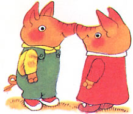efore
passing. During these mind-numbing extended math sessions, he practiced
copying his mother's handwriting in order to forge notes from home. Dear
Miss O'Conner, one note read. Richard couldn't attend school yesterday.
He had a bad cough. Signed, Mrs. Scarry. After his frequent absences
were finally tallied up, it took him five years to complete high school.
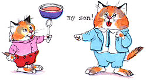He
drew countless pictures of one girl in particular (during his "alone
time") and inevitably these crude, charcoal nudie pics were discovered
by his parents. His father, a serious and conservative businessman, was
convinced his son's obsession with women, artwork, and ditching school
would lead to a sad, pathetic life in a attic, with nothing but canned
spaghetti for breakfast. One evening he seized one of Richard's early
illustrations - a half-naked girl swinging tassels from her nipples -
and confronted the boy directly: "What's going to become of you,
Richard?"
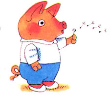"If
I'm going to be an artist, sir, I have to learn how to draw the human
form," came the reply.
Possibly Richard needed a real father figure. Some kind of male influence
who could help him win as many girls as possible. He listened intently
to his Uncle Arthur, a white-haired, sun-tanned ladies' man kinda-guy
who lived in New York. Arthur told truly tall tales about the many women
who swooned for him, and Richard took to heart one piece of his uncle's
wisdom: "Buy a natural linen suit at Brooks Brothers, with a pale
blue shirt to wear under it. This is the only thing you need to learn
in life."
 Richard
purchased just such a suit, and paid for it by putting in long hours selling
neckties at his father's department store. Unfortunately, it failed to
impress the admissions officer at Harvard University, where his father
was hoping he'd enroll and eventually get accepted. Double-unfortunately,
Richard's grades had been terrible from the very start, and certainly
not ivy league material, to say the least. Richard
purchased just such a suit, and paid for it by putting in long hours selling
neckties at his father's department store. Unfortunately, it failed to
impress the admissions officer at Harvard University, where his father
was hoping he'd enroll and eventually get accepted. Double-unfortunately,
Richard's grades had been terrible from the very start, and certainly
not ivy league material, to say the least.
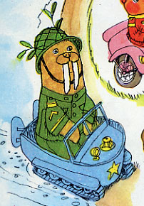At
his father's request, Richard attended a local business college, but his
agonizing, indelible hatred for school compelled him to drop out before
the end of his first year. Eventually, his father gave up. He abandoned
any pretext of having control over Richard's mind, and shipped him off
to art school at Boston's Museum of Fine Arts. And wouldn't you know it,
Richard flourished in the welcoming atmosphere of nude models, drawing
pencils, and paint. It was supposed to be a new start for the young man
- but World War II broke out, ending his art studies permanently. One
year shy of graduation, Richard was drafted into the army. He would never
receive his diploma.
O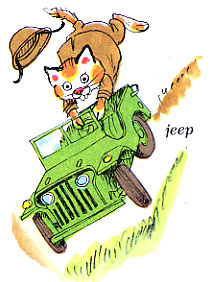n
his first day of service, the army told him to list his occupations on
a questionnaire. When Richard scribbled the word ARTIST, he was
shipped off to radio repair school in Fort Monmouth, New Jersey. Goddamnit!
More fucking school! Jesus Christ! He failed the exam miserably, of course,
earning the unheard-of lowest score in the history of the class: minus
thirteen. The barracks were enormous and dismal, the lessons in proper
bedmaking ridiculous. His drill sergeant was loathsome. Learning how to
walk again, left - right - left - right. Richard had no idea how
his life had come to this.
In no time at all, he was ordered to report to the major's office. Wondering
what he'd done wrong, Richard tried delivering a smart and snappy salute,
but he was so nervous 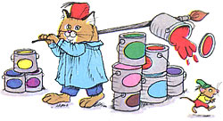his
hand trembled.
"I see you're an artist, Scarry," said the major. "Can
you paint letters? A, B, C - that sort of thing?"
"Yes, indeed, sir," Private Scarry answered.
And so. Richard was assigned two sloppy buckets of paint, silver and
black, both thicker than tar. He flung the paints from their buckets and
spread them with a broom. He was ordered to paint a sign nearly thirty
feet long: WELCOME TO THE SEVENTH ENGINEERS OF FORT MONMOUTH, NEW JERSEY.
It was a task which could easily keep him busy for the entire war, but
after a few weeks the paint had dried. Dick's talents as an artist were
finally being recognized! By the United States military, no less!
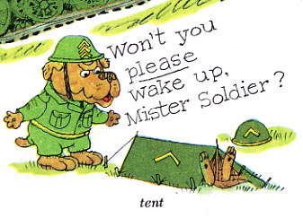After
that, everything changed for Richard. While his less fortunate army buddies
were running laps with heavy backpacks in the hot sun, Richard g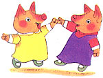ot
weekly passes to take a bus to New York, where he'd dance with young women
at the U.S.O. Assigned to Special Services, Scarry relocated to Lee University
in Lexington, Virginia, a beautiful campus with p-l-l-lenty
of innocent, excitable girls in perpetual attendance from the nearby Red
Cross and the Nurses Corps. Not only that, he received a medical discharge
excusing him for from any strenuous physical activity. No forgery required
this time, it was like getting a ninety day vacation for free.
Shortly thereafter, he was assigned the daunting task of being the military's
"art director". 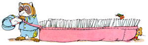A
colonel from headquarters had informed him that his new job was to tell
the troops why they were fighting, and send them news from home.
Richard had no idea how he was meant to accomplish such a task. When he
asked the colonel how, the colonel shouted, "By post!" and slammed
the door behind him.
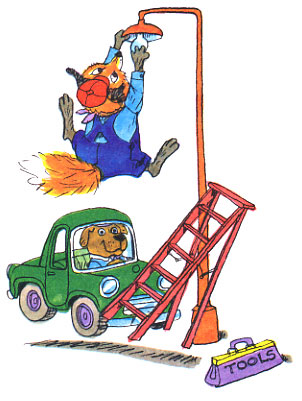How
could an inexperienced young soldier like Richard Scarry possibly bolster
the morale of the entire American fighting force stationed around the
world? By plagiarizing Time magazine, of course. He had copies
flown in; he paraphrased the important parts, created some illustrations,
and turned it into a flier duplicated by mimeograph. It was the best assignment
he'd ever had, and soon he was editor and writer of Publications for the
Information and Morale Services Section of the Allied Force Headquarters.
This job gave him even more leisure time, enabling him to travel
around the world 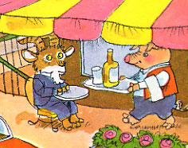
to Africa, Algiers, Italy, and France. He took long walks, sat in cafes,
studied ancient ruins, visited art museums and churches. The experience
instilled in him a great love of travel and foreign culture which would
later be reflected in his best-selling children's book Busy Busy World.
Scarry would later declare to his colleagues that World War II was -
in his opinion - the "best war ever".
When Japan surrendered on August 14, 1945, World War II came to an end.
Richard was now a 27 year-old civilian who could honestly report he'd
had experience developing entertaining content for an audience of more
than one million readers each week. He looked forward to getting a "real"
job, and he was hired to work in the art department of Vogue magazine,
a Condé Nast publication. Hooray!!
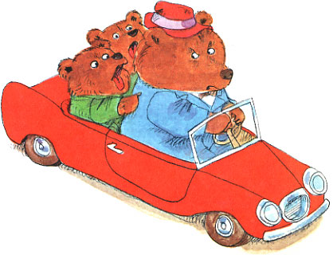Three
weeks later, he was fired. D'oh.
No reason was given, apart from the fact that Richard "just wasn't
right for the position." When he asked why they'd bothered to hire
him in the first place, the personnel officer said - no joke - that she'd
been impressed by his white linen suit and blue shirt.
He found a small apartment in Manhattan's East Side, for which he paid
- again, no joke - fourteen dollars a month. During the mid 1940s, a person
could live on $1000 a year - and Richard lived well, despite being a child
of the Depression years. He secured a job in an advertising agency pasting
up photographs for layouts, but the work was uncreative and boring. He
lasted three months, eventually devoting himself to free-lance illustration.
He maintained an active social life, going to parties, good restaurants
and chasing after attractive young women. When Holiday magazine paid him
$2000 for a single assignment, he relocated to an even better bachelor
pad in Washington Square, where the 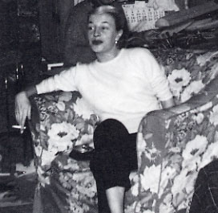cocktail
parties were nearly a hundred times more elaborate. It was in this neighborhood
that he met a particularly charming young lass by the name of Patsy Murphy,
who would later become his one and only wife. His days of womanizing were
over, and he proposed to her efficiently, by telegram:
MUST MOVE GRAND PIANO.
HEAVY. NEED HELP. COME IMMEDIATELY. ...DICK
If you can call that a proposal. Patsy and Richard were married September
11, 1948, and so intent was he on becoming a competent artist that his
personality began to change. He grew quiet and withdrawn, and he wasn't
much of a talker. Meanwhile, Patsy was outgoing, a drinker, a smoker -
very extroverted and gregarious. She loved entertaining, she loved people
and parties. It was a perfect arrangement; Patsy guided him through tedious
social engagements, often acting as a buffer between him and his publisher.
Scarry was turning into a disciplined worker, rising shortly before eight
each morning, and drawing in his studio until four in the afternoon. An
hour break for lunch. Patsy wasn't allowed to talk to him during this
time; she simply set a ham sandwich and pickles on his desk and went back
downstairs.
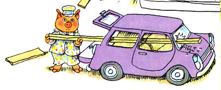That
summer, he got his first big break. The Artists and Writers Guild, a small
editorial subsidiary in New York financed by the Western Printing Company
was producing mass-market activity books and games. One of their creations
were Little Golden Books, which sold for twenty-five cents each. After
Scarry submitted his portfolio - which at that time consisted mostly of
cartoonish human characters - they signed him to a one-year exclusive
services contract worth an astonishing $4800.
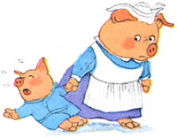It
wasn't until 1959 that his animal characters emerged as real people. Naughty
Bunny told the story of a little bunny who constantly tracked mud
all over the carpet and kept his room in a state of perpetual disaster,
driving his poor mother to tears. 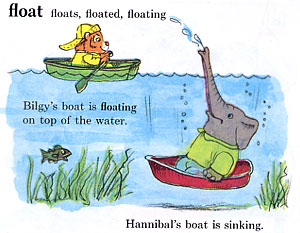Scarry
wanted to create a different kind of world for children, one with equal
parts humor and pathos. He had a secret plan to develop a new kind of
dictionary which arranged words by categories instead of the alphabet.
This format would allow him to draw over fourteen hundred solo panels
of slapstick anthropomorphic behavior, introduce lots of new characters,
and write short amusing texts for each category. The result was Richard
Scarry's Best Word Book Ever, hardbound at 10.5 x 11.7 inches in oversized
format. It truly dwarfed all others, selling seven million copies in only
a few short years. The Scarry genius had broken loose.
He didn't write stories, he drew them in pencil on frosted acetate. Then
he painted through the entire stack color by color. First he'd colorize
everything meant to be red, then blue, yellow, and so forth. He'd do all
the pigs, then all the cats, then all the dogs. He preferred a bright,
simple palette of Winsor & Newton Designers Colors: Flame Red, Carthamus
Pink, Cadmium Orange and Primrose, Golden Yellow, Linden Green, Permanent
Green Middle and Deep, Winsor Green, Sky Blue, Winsor Blue, Burnt Sienna,
Raw and Burnt Umber, Chinese Orange, and Spektrum Violet.
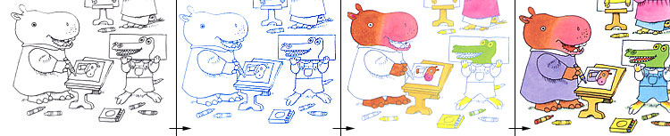
When
the blueboards and pencil sketches were finished, he juxtaposed alongside
them blocks of text affixed with Scotch tape meant to carry readers along
through a loose narrative. He punched his ideas out on an old portable
typewriter, usually by way of the hunt-and-peck method, and many of these
paper scraps contained typos, spelling and syntax errors - even poor grammar.
But an editor could fix that up. Being smarty-smart all the time wasn't
necessary for a guy who hated school. Richard Scarry was a slapstick make-'em-laugh
funny man first, an "educator" second. His singular purpose:
entertain the kids. Be funny without being stupid. Don't do it in a way
they've seen a million times before. And whatever the cost, don't be boring.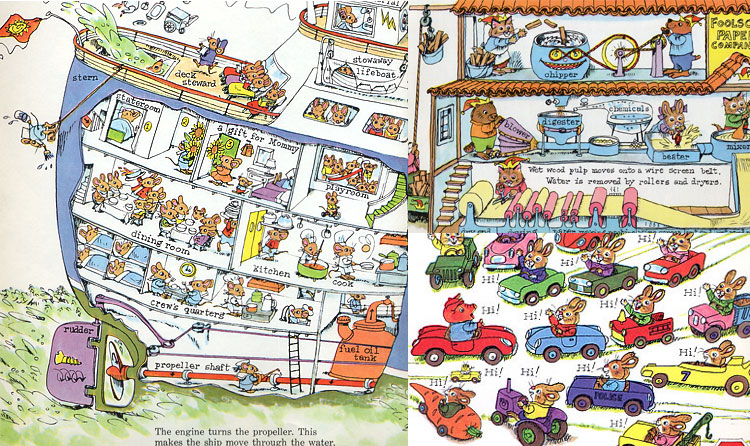
He hated white space, deliberately filling up each page with as much
pictorial matter as possible. By doing so, young readers would want to
scan the books over and over, possibly finding something new with each
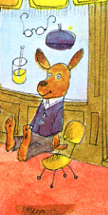reading.
Exploded views and simplified cut-away diagrams became commonplace throughout
his work. Editors noticed that Scarry's "children's books" were
becoming more complicated - his illustrations had grown so dense that
even a single page required endless hours of fact-checking and research.
Scarry's personal library (and by proxy, that of his editors) contained
encyclopedias, travel books, cardboard boxes filled with pictures torn
from old magazines, restaurant menus, vacation snapshots from every corner
of the globe during his military travels, and rubber-banded rolls of architectural
diagrams. He would outdo himself time 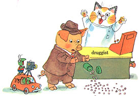and
time again, from What Do People Do All Day to Richard Scarry's
Great Big Schoolhouse. At this stage of the game, his advances were
upwards of $105,000.
One day some of these sketches were sitting on Scarry's editor's desk,
and Theodore Geisel (aka Dr. Seuss) unexpectedly strolled into
the office. Dr. Seuss wandered over to the table and began idly leafing
through Scarry's preliminary drawings. He didn't ask whose work it was.
Seuss and Scarry were two very different men. Seuss worked primarily with
words, Scarry with pictures. Suddenly Seuss stopped flipping and asked,
"Does this sort of thing sell?" It sold very well indeed.
In fact, Richard Scarry's books had been outselling Seuss's for years.
But neither author would ever really know that, due to the "good
diplomacy" management style strictly upheld at Random House.
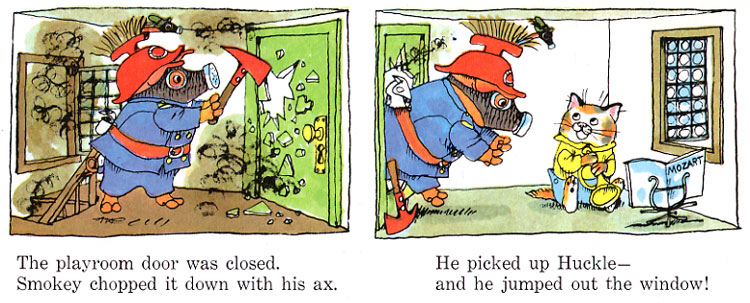Richard also
admired the work of Beatrix Potter, but he made every effort not to copy
her style. Yes, they both put articles of clothing on anthropomorphic
animals, but she spent countless hours studying them and making realistic
drawings. The reader never thinks of her characters as human. Scarry would
occasionally emphasize a particular animal habit (Bananas Gorilla likes
bananas and t ries
to steal them, Lowly Worm pokes his way through apples, and there's always
a hole in the roof of a bus to accommodate a giraffe's long neck) - but
these characteristics are a source of incidental humor, not as a means
of establishing a figure's identity as an animal. ries
to steal them, Lowly Worm pokes his way through apples, and there's always
a hole in the roof of a bus to accommodate a giraffe's long neck) - but
these characteristics are a source of incidental humor, not as a means
of establishing a figure's identity as an animal.
The real reason he worked this way was that drawing animals was more
fun than drawing humans. Fun to draw, fun for kids, and fun for the adults
compelled by their children to read these books over 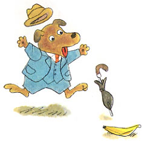and
over. "If I show a human father falling off a ladder or getting into
a monstrous auto crash," he remarked, "it suggests danger and
getting hurt. If I show Father Pig in the same situation, nothing more
is hurt than his dignity. Also, a chocolate cake can explode out of Mother
Bear's oven."
To Richard, pigs, cats, bears, hippos, giraffes, lions and so forth were
not animals. They were real people living normal lives, performing everyday
tasks like. He made every effort to completely subtract elements of delineated
racial characteristics, believing that even a simple illustration of a
girl with blonde hair could not be fully related to by a girl with dark
hair. But both girls might relate and respond to bunny rabbits.
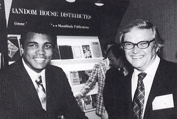After
twenty years with Golden Books, Scarry moved across Madison Avenue to
Random House. While the publishing company was pleased as punch to receive
him, it was here that Richard Scarry started to receive his first batch
of hate mail.
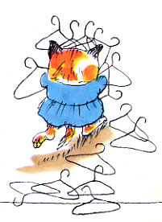Letters
of complaint poured in about the roles played by women in reformed-gigolo
Scarry's picture books. The increasing importance and acceptance of the
feminist movement in the United States called into question why a large
percentage of Scarry's female characters were depicted as housewives:
cooking, cleaning, washing dishes. Scarry, now a significantly older man,
was a bit incensed. He maintained that because his characters were animals,
and because most wore trousers, it was difficult to discern whether
or not a worker was a man or a woman. Besides, most of the women characters
dressed just like men anyway, a trait arguably mirrored by the feminists
themselves. Random House urged him to change with the times, and he wasn't
too difficult to persuade once he learned sales were being affected. His
Best Word Book Ever was still his number-one bestseller, and it
was accused of being the worst offender. And so he drew new art, using
women workers on the job, and depicting men taking a more active interest
in household duties.
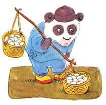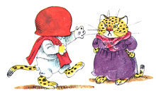Then,
more scandal. Racial issues began to surface when Random House re-released
Busy, Busy World. This picture book had been a pinnacle of achievement
for Scarry when he was at Golden Books. It was a labor of love, incorporating
his fondness for travel and appreciation for other cultures. But changing
times and buckets of hate mail at Random House suggested that characters
like Manuel of Mexico (with a pot of refried beans stuck on his head),
Ah-Choo the near-sighted panda bear from Hong Kong, and Angus the Scottish
bagpiper were no longer acceptable role models for children. Random House
quietly subtracted some of Scarry's best stories from future distribution,
including the much-loved vignette of Patrick Pig, who shouts "UP
THE IRISH" after kissing the Blarney stone. That story can be found
in earlier copies of Golden Book's Busy Busy World, in the remainder
bin of your local thrift store.
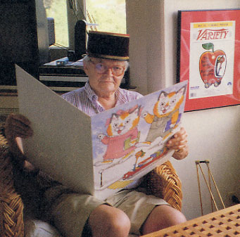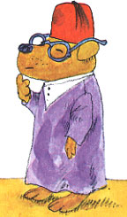Scarry
never received a single award. None of his drawings were ever selected
by the New York Times as among the best of the year, and he never
won a Caldecott Honor. It was widely considered among awards committees
that not only was he too popular, he sold too many books.
The millions of dollars he earned were considered his "reward"
- his great success disqualifying him from being eligible.
In the 1980's, Richard's eyesight was complicated by macular degeneration,
a progressive disorder which attacks the central part of the retina, causing
gradual loss of vision. His last book, Richard Scarry's Biggest Word
Book Ever was one of his largest accomplishments, weighing in at 15
3/4 x 24 inches. Although Random House was forced to charge $29.00 per
copy, the entire printing run quickly sold out.
Richard later developed cancer of the esophagus. An operation to remove
the tumor, along with follow-up chemotherapy and evacuation of excess
fluid from his lungs was not enough to prevent a fatal heart attack. He
died in his home on April 30, 1994, at age 74. His wife Patsy died in
1995. Their son Huck carries on the tradition, writing and illustrating
fanciful, educational books for children.
|